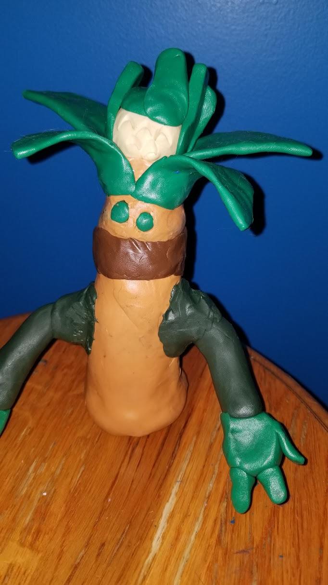
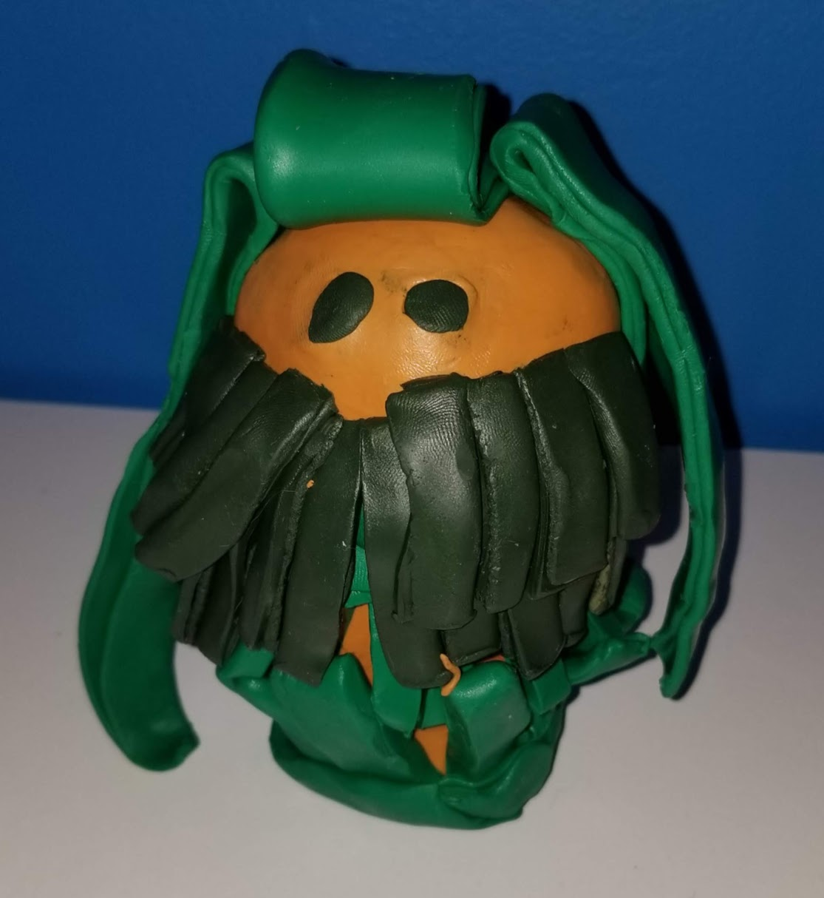
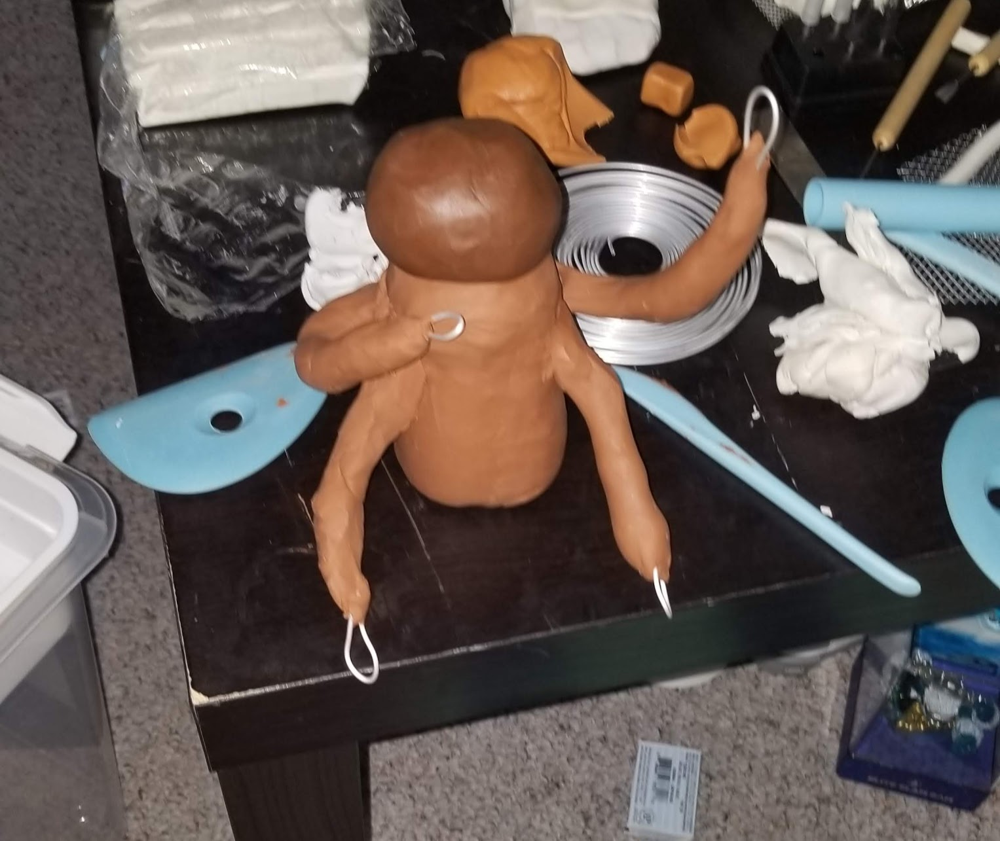
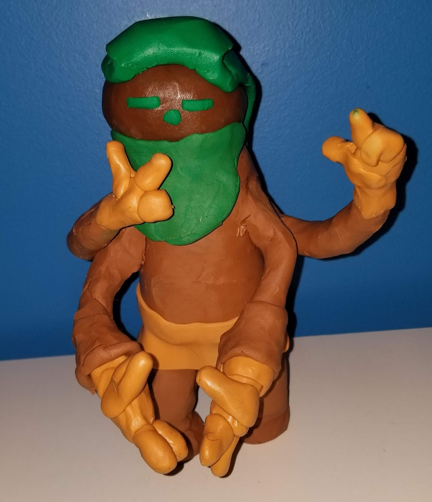
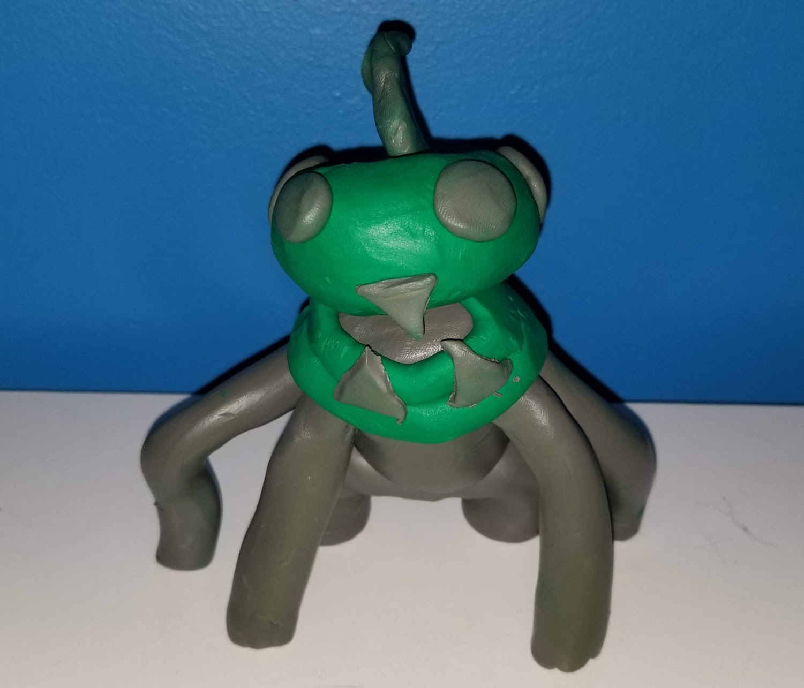
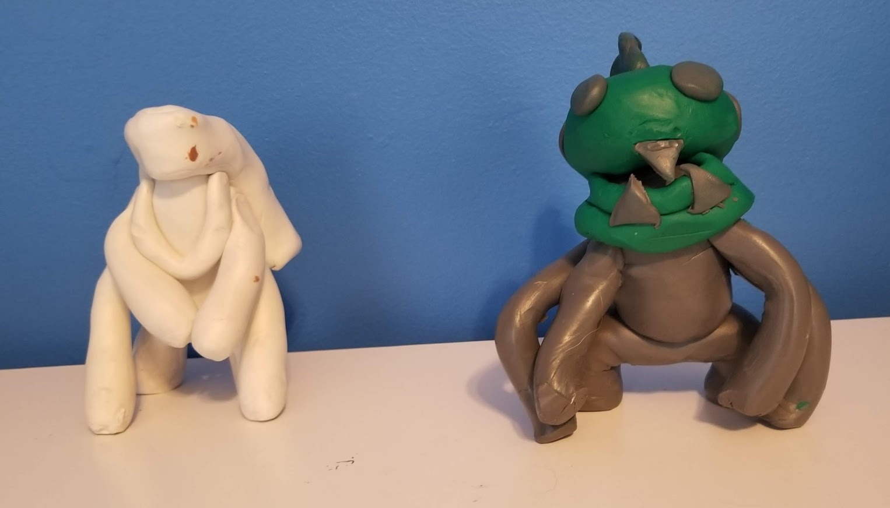
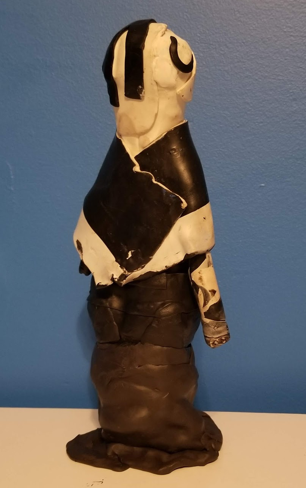
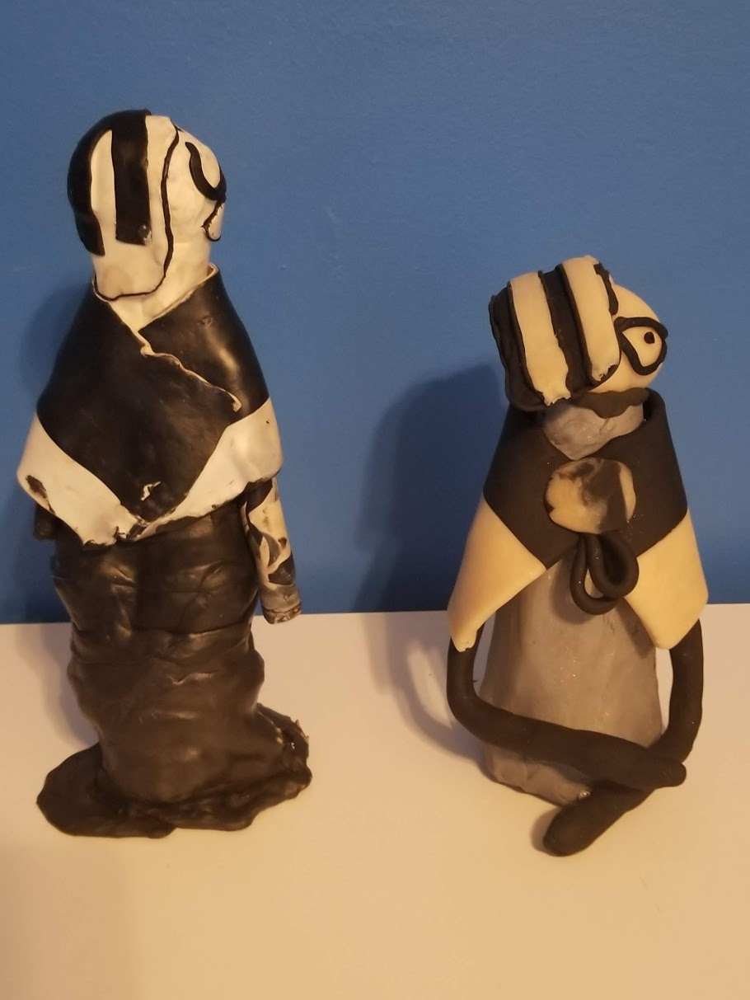
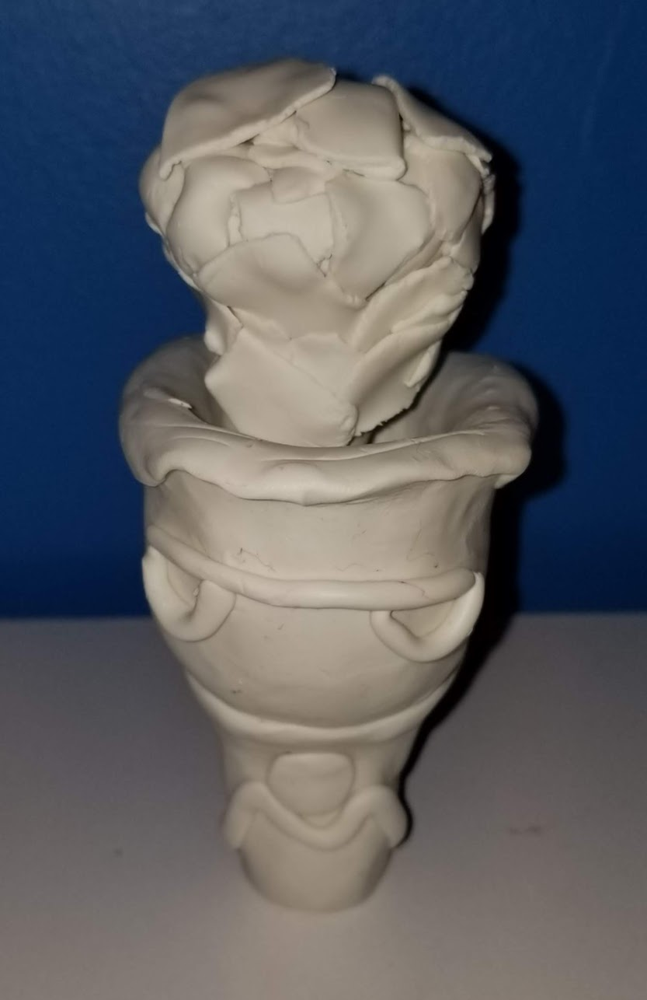

-
Zeitleiste
«2019 »-
Januar
-
März
-
Mai
-
August
-
September
-
Inktober
-
-
28. Januar
Dies ist mein Versuch bei
Popo
aus dem VideospielIce Climbers

-
15. März
Erster Entwurf eines Ananasmannes
 -
2. Mai
Aktualisiert die Arme des Ananasmannes

Hat einen Kiefernmann gemacht
29. Mai
Test mit vierarmigen Charakteren gestartet
 -
5. August
Fertige den vierarmigen Testcharakter an
25. August
Erstellt einen Meerestiercharakter
Der Meerestiercharakter neben dem ersten Entwurf
 -
3. September
Charakter mit flüssiger Unterseite hinzugefügt (Morgan)
26. September
Morgan mit ofengebackenem Ton überarbeitet
 -
Inktober
Jedes Jahr im Oktober stellen sich Künstler auf der ganzen Welt der Herausforderung des Inktober-Zeichnens, indem sie den ganzen Monat über täglich eine Tuschezeichnung machen.
- von inktober.comKunstaufforderungliste
Woche 1
1
2
3
4
5
6
7
Woche 2
8
9
10
11
12
13
14
Die Kunstaufforderung für Tag 1:
Ring
.Ich hatte das benutzt, um die Hände besser zu formen -und Handgelenke zu einem gewissen Grad- und kleinere Details hinzufügen.

Die Kunstaufforderung für Tag 2:
Geistlos
.Ich hatte das benutzt, um die Kopfformung zu verbessern und verschiedene Augenformen auszuprobieren.
Die Kunstaufforderung für Tag 3:
Köder
.Die Kunstaufforderung für Tag 4:
Einfrieren
.Die Kunstaufforderung für Tag 5:
Bauen
.Die Kunstaufforderung für Tag 6:
Heiser
.Die Kunstaufforderung für Tag 7:
Verzaubert
.Die Kunstaufforderung für Tag 8:
Gebrechlich
Die Kunstaufforderung für Tag 9:
Schwingen
Die Kunstaufforderung für Tag 10:
Muster
Die Kunstaufforderung für Tag 11:
Schnee
Die Kunstaufforderung für Tag 12:
Drachen
Die Kunstaufforderung für Tag 13:
Asche
Die Kunstaufforderung für Tag 14:
Bewachsen